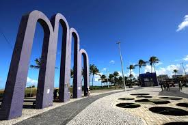

Praia atalaia

Na orla da atalaia existem opções de lazer como bares e casas de dança e musica,
alem de barracas de aguas de coco e quadras de basquete,
futebol, tenis e uma pista dee skate.
Considerada uma das mais bonitas do Brasil,
oferece aos cidadãos e turistas o que há de melhor em lazer e entretenimento.
Roteiro Turistico em 1 Dia
- Café da manha em uma das barracas da orla.
- Caminhas ate os arcos da atalaia para fotos.
- Visita ao Oceanario de Aracaju.
- Almoço com frutos do mar.
- Tarde livre para banho de mar e esportes.
- Fim de tarde com agua de coco observando o por do sol.